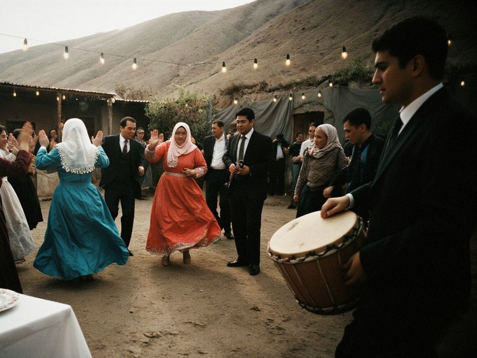
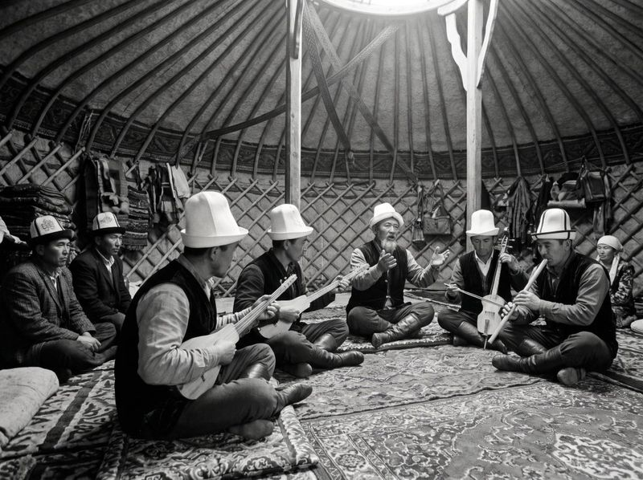
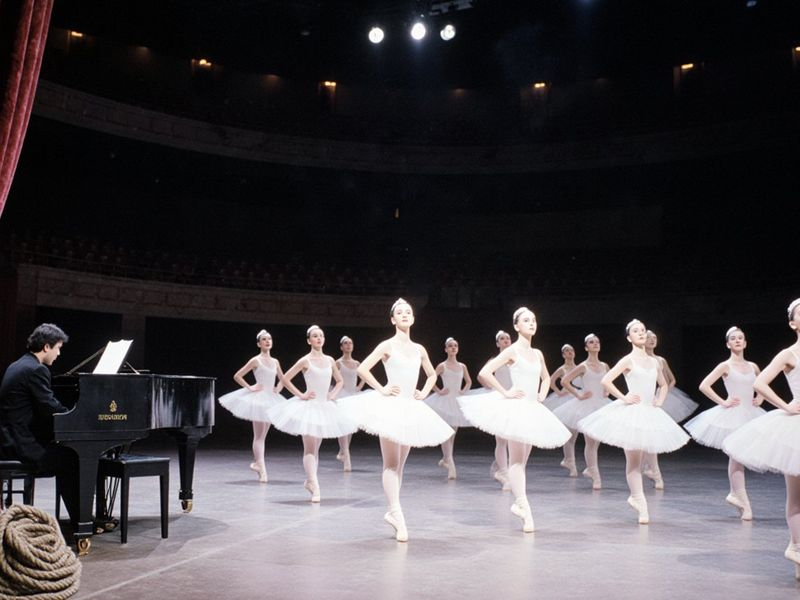
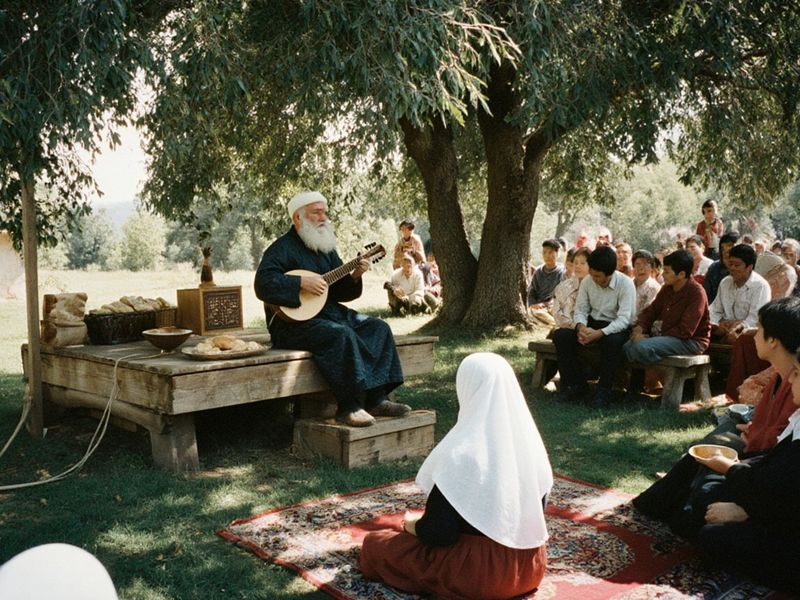

Repertoire
A full concert is two parts of about 50 minutes. Shorter programmes for schools and the districts. Bookings: akkuu@korkom.org.

Aylanma
Circling · 14 min · whole company
The circle dance of weddings and feasts. Step, step, step, turn: on every fourth beat each dancer spins and claps over the head. It quickens until the ring breaks with a shout.

Kelin bii
The bride's dance · 7 min · women
The slow dance of the toi, when the bride in her elechek enters the groom's family. Staged in 1959; the costumes copy the Palace of Art's köküröktük.

Jorgo
The ambler · 5 min · men
The men's dance of the ambling horse, danced at weddings and after ulak. Ak-Kuu's version for three riders dates from 1984.

Kara aylanma
The black circle · 11 min · whole company
The slow night form of the aylanma, in candlelight. Added in 2019, to music by Eski Ün's komuz player.